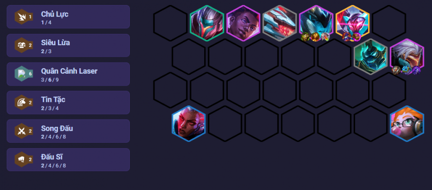

Đội hình này tập trung vào chủ lực Zed với mốc 6 quân cảnh laser, Song Đấu và Tin Tặc chỉ kích ở mốc
2 nhưng cũng rất hữu dụng khi ship thẳng Zed ra tuyến sau ám sát kẻ địch và thăng tiến sức mạnh
>liên tục. Zed mang Nỏ Sét là để giảm kháng phép của kẻ địch tuyến sau (drone của Quân Cảnh Laser
>gây sát thương phép). Với việc được đặt an toàn ở tuyến dưới, gã sát thủ này có thể tích quyền năng
>rất tốt. Để đảm bảo điều đó, mang thêm một Áo Choàng Bóng Tối hoặc Huyết Kiếm / Nắm Đấm Công lý
Độ khó: Thấp
Mordekaiser (5 vàng)
Sejuani (4 vàng)
>Ekko (4 vàng)
>Zed (4 vàng)
>Senna (3 vàng)
Zoe (3 vàng)
Yasuo (2 vàng)
Renekton (1 vàng)